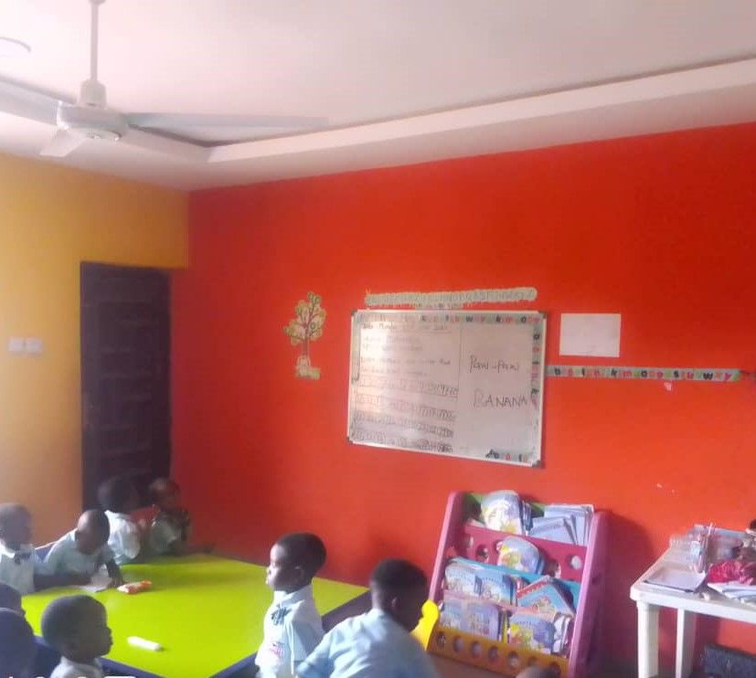

Creche
At Kazlam International School,

our Creche Section is a nurturing, safe, and stimulating environment designed for
infants and toddlers. We provide high-quality early childhood care, ensuring that each child receives
personalized attention and the foundational support needed for their growth and development.
Our Approach
We believe that early childhood education should be gentle, engaging, and developmentally enriching.
Our creche is staffed with trained caregivers who provide warmth, encouragement, and structured activities that help babies and toddlers develop social, emotional, and cognitive skills.
Facilities & Activities
Safe and Comfortable Spaces: Our rooms are designed for maximum comfort, with soft play
areas and child-friendly furniture.
Qualified Caregivers: Trained professionals who provide attentive care and ensure each
child’s needs are met.
Interactive Learning: Age-appropriate activities that foster sensory development, language
acquisition, and early social interactions.
Parent Engagement: Regular updates and communication to keep parents informed about
their child's progress. Blog
The creche is the first step in a child’s learning journey, and we are committed to making it a warm and enriching experience.
philosophy of Our Creche
"I've seen a huge improvement in my child's grades since they started following the study routine
recommened by this service. The personalized approach really works!
Basit's family
"We were Impressed by the creche's attention to detail and commitment to safty. The staff are knowledgeable
and experienced, providing a stable and supportive environment. our child has grown and develop so much
since starting here".
peculiar's family
"Our child has thrive in this nurturing environment. The staff are dedicated and passionate
about providing
quality care. We appreciate the regular updates and progress report they share with us".
John's family.
KAZLAM.
Our goal is simple: to Build A Standard Foundation, to give every
child a happy, secure start that sets the tone for
a lifelong journey of growth.
Do you have a
question, an idea
Built by me with 🍔&🍾
© 2025 Joe Joe/Jet club kis.